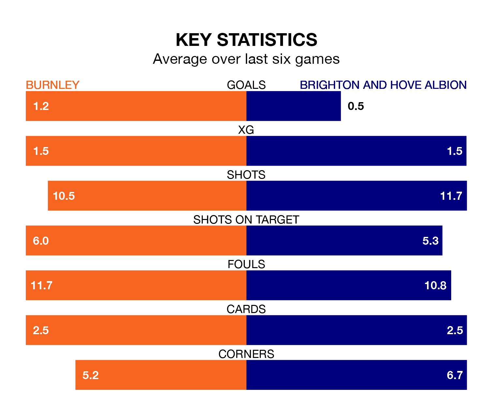

Brighton and Hove Albion are strong favourites to take all three points despite Burnley's home advantage in Saturday's match at Turf Moor.
*Betting Company* are offering odds of 1.91 on Brighton sealing the win, with the visitors sitting 10th in the Premier League table.
Burnley, who are 19th in the league and 24 points behind Brighton, are priced at 3.31 to win. A draw is set at 3.58.
In the last 10 years, Burnley and Brighton have played each other on 13 occasions. Burnley won three of them, Brighton two, and they drew eight times.
On average, the Clarets scored 1.2 goals and Brighton 0.8 in those matches.
Their last meeting was on December 9, when they played out a 1-1 draw.
Brighton's Pascal Groß is the league's most creative player, racking up 10 assists in 29 appearances so far this season.
For Burnley, Dara O'Shea has set up the most goals, having laid on four assists in 28 games.
With 32 goals in 32 games so far this season, the Clarets are the league's joint-third-lowest scorers with 1.0 goals per game. And they are conceding more than average, letting in 67 goals at a rate of 2.1 per game.
Albion, meanwhile, are average scorers, with 1.6 goals per game. They have also conceded 1.6 goals per game.
The home side are in disappointing form in the Premier League, with one win and three draws from their last six games.
With a win and two draws over that period, the visitors' form is slightly worse – they have taken five points from 18, compared to Burnley's six.
Burnley's last match was on April 6, a 1-0 loss against Everton.
Brighton lost 3-0 against Arsenal last time out, also on Saturday.
Saturday's match will be refereed by Simon Hooper, who has taken charge of 20 Premier League games so far this season, issuing three red cards and booking 96 players. He has awarded two penalties.
The last Burnley game Hooper refereed was a 1-1 away draw with Brighton and Hove Albion on December 9. His last Brighton match was their 3-0 loss away at Fulham on March 2.
Updated: 10:01 (UTC), 12/04/24